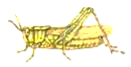
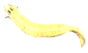
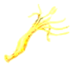
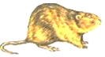

2017年北京市海淀区中考生物试题 · 选择题 第21、22、23、24、25题 · 对应解析
21. 下列动物中，身体结构呈辐射对称的是（ ）
A.

B.
C.

D.
【答案】C
【解析】
【分析】A蝗虫属于节肢动物，B涡虫属于线形动物，C水螅属于腔肠动物，D老鼠属于哺乳动物。
【详解】A、蝗虫是节肢动物，身体头、胸、腹三部分，体表有外骨骼，足和触角均分节，身体呈左右对称，不符合题意。
B、涡虫属于扁形动物，身体扁平，有口无肛门，身体呈左右对称，不符合题意。
C、水螅属于腔肠动物，身体结构简单仅有内外两层细胞构成，有口无肛门，身体辐射对称，符合题意。
D、老鼠属于哺乳动物，身体呈左右对称，体表被毛，体内有膈，胎生哺乳，有发达的大脑，不符合题意。
【点睛】解答此类题目的关键是知道腔肠动物的主要特征，为基础题目。
22. 下列动物中，属于环节动物的是（ ）
A. 蜗牛B. 河蚌
C. 蚯蚓D. 枪乌贼
【答案】C
【解析】
【分析】环节动物的特征为身体由许多彼此相似的环状体节构成，代表动物有沙蚕、水蛭和蚯蚓等。
【详解】环节动物的特征为身体由许多彼此相似的环状体节构成，蚯蚓、水蛭是典型的环节动物；蜗牛、河蚌、枪乌贼身体柔软，有外套膜属于软体动物。
故选C。
【点睛】关键知道环节动物的特征，即：身体由许多体节组成。
23. 小明找到四个与动物有关的成语，其中所涉及到的动物都属于恒温动物的成语是（ ）
A. [虎]头[蛇]尾B. [鹬][蚌]相争
C. [蛛]丝[马]迹D. [鸡][犬]不宁
【答案】D
【解析】
【分析】（1）体温不因外界环境温度而改变，始终保持相对稳定的动物，叫做恒温动物，如绝大多数鸟类和哺乳动物。
（2）体温随着外界温度改变而改变的动物，叫做变温动物，如无脊椎动物、鱼类、两栖类、爬行类。
【详解】“虎”是哺乳类属于恒温动物、“蛇”是爬行类属于变温动物；“鹬”是鸟类属于恒温动物、“蚌”是软体动物属于变温动物；“蛛”（蜘蛛）是节肢动物属于变温动物、“马”是哺乳类属于恒温动物；“鸡”是鸟类、“犬”是哺乳类，都属于恒温动物。所以，所涉及到的动物都属于恒温动物的成语是“[鸡][犬]不宁”。
【点睛】关键知道动物界中只有鸟类和哺乳类动物是恒温动物。
24. 鸟类区别于其他各种动物的最显著特征是（ ）
①体表有羽毛 ②前肢为翼 ③用肺呼吸并用气囊辅助呼吸 ④心脏四腔 ⑤体温恒定 ⑥卵生、体内受精
A. ①②③B. ④⑤⑥
C. ①③⑤D. ②④⑥
【答案】A
【解析】
【分析】多数鸟类营飞行生活，其结构特征总是与其生活相适应的。如体表被羽毛，前肢变成翼，适于飞行；身体呈流线型，可以减少飞行时的阻力；体内有气囊，辅助肺完成双重呼吸，可以供给充足的氧气；有的骨中空，有的骨愈合，直肠很短，能减轻体重；胸肌发达，利于牵动两翼完成飞行动作，心脏四室，体温恒定等。
【详解】①体表有羽毛 具有保温和保护作用，②前肢变为翼，适于飞行生活。这一点也与其它动物不同，如哺乳动物是体表被毛，但不是羽毛；③用肺呼吸并用气囊辅助呼吸，可以供给充足的氧气，适于飞行，这点也是其它动物所不具有的；而④心脏四腔、⑤体温恒定、⑥卵生，体内受精等不属于鸟类所特有的特征。
【点睛】鸟类的身体结构和生理特点是与它的飞行生活相适应的，这是长期自然选择的结果。
25. 下列行为中，属于鸟类繁殖过程必不可少的行为是（ ）
①交配②筑巢③化蛹④育雏⑤结茧⑥孵卵⑦跳舞⑧产卵
A. ①⑧B. ②⑦
C. ④⑥D. ③⑤
【答案】A
【解析】
【分析】鸟类的生殖一般要经历6个过程，即筑巢--求偶--交配--产卵--孵卵--育雏，有的鸟类在求偶时通过跳舞来相互吸引，交配后通过受精形成受精卵。
【详解】鸟类的生殖一般要经历6个过程，即筑巢--求偶--交配--产卵--孵卵--育雏，其中所有鸟类都要经历的阶段有3个，即求偶、交配、产卵。属于鸟类繁殖过程必不可少的行为是①交配、⑧产卵。
【点睛】鸟卵的繁殖行为是经常考查的问题，同学们一定要牢固掌握。